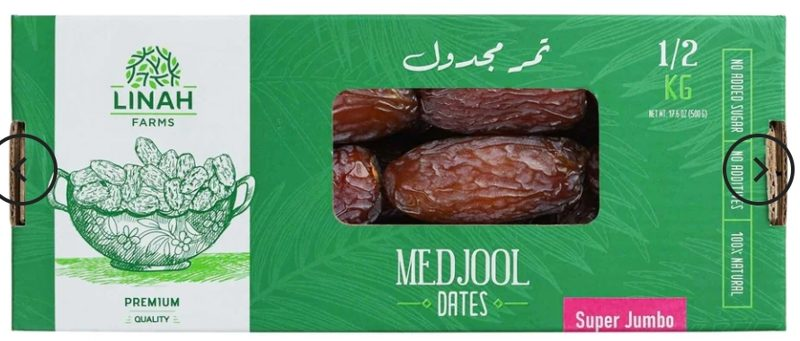
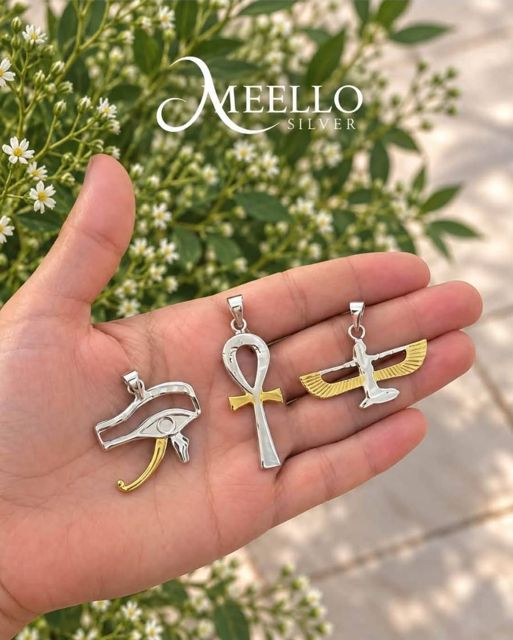
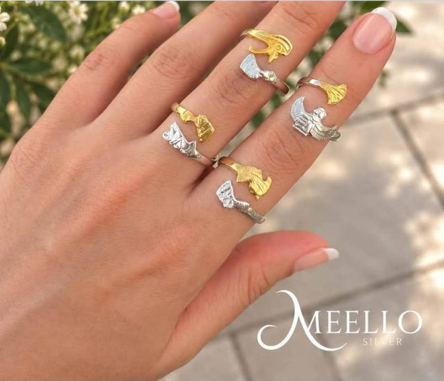
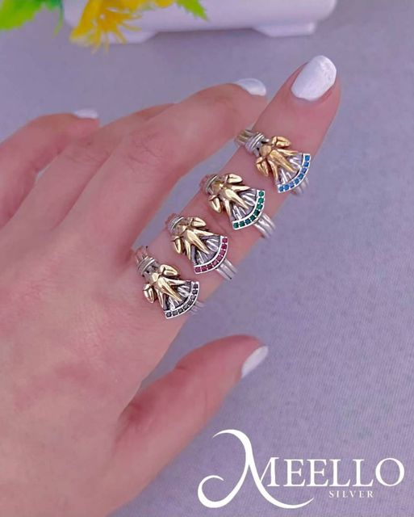
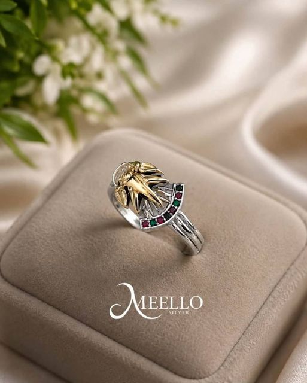
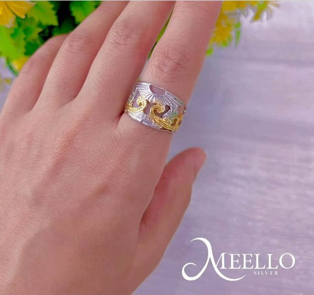

群組公告重點 Yawi亞薇夢創 群組 11/13–22
✈️ 11/26（四）晚上 8:30 桃園機場集合，搭 11:30 的班機（凡寧 11/21 再次公告確認）。出門前再確認航班時間、航廈和行李額度，最後摸一次隨身包，確認護照有帶。
報價單檔名寫「1126–1208」，也就是 11/26 出發、12/08 回到台灣。
報價單檔名寫「1126–1208」，也就是 11/26 出發、12/08 回到台灣。
📄 報價單重點（亞薇夢創 11/16）
- 13 天 10 夜：11/26 出發、12/08 回到台灣；埃及境內 10 晚，4–5 星飯店／特色酒店，雙人房含早餐。
- 台灣不派領隊，當地由 atta 與中文或英文導遊帶團。
- 團費已含：境內住宿、行程內餐食、專車與機場接送、開羅→亞斯文與盧克索→開羅的境內機票、導遊與基本門票。
- 團費不含：台灣–埃及國際機票、簽證費、旅平險／不便險、個人消費、洗衣、酒水、房內與行李小費、單人房差。
- 自費選配：熱氣球、駱駝、專業旅拍（依天數計價）。
- 費用、付款方式與契約請看凡寧在群組分享的報價單 PDF。
🆕 11/20–22 最新提醒
- 📝 契約文件：凡寧請大家這幾天簽好後回傳；發票會在見面時當面交給大家。
- 😴 第一天要有體力：埃及景點大多下午 4 點關門，最後一個景點要在 4 點前進場。atta 建議在飛機上盡量睡，抵達當天就能照行程走。
- 🍞 抵達早餐：atta 會準備新鮮早餐，之後會傳菜單和店家影片，有想吃的直接跟他說；部分餐點依當季水果供應。
- 🌤 穿搭：開羅前兩天不冷，T 恤＋套頭薄毛衣；11/29 亞歷山大約 23°C、不下雨，帶一件外套（詳見下方「天氣穿搭」）。
- 💍 atta 分享了 925 純銀飾的網站：刻阿拉伯文字、有男款，3 種尺寸，價格網站上都有標。他說明這不是他的店，有興趣再自己看：silverartstore.com
📣 11/16 線上行前會議之後
- 行前會議 11/16 晚上 7:30 已經在 Google Meet 開過。凡寧在群組分享了報價單 PDF（Yawi_Egypt_1126-1208報價單_1116），記得下載存到手機。
- ✅ 簽證：由凡寧統一辦理，11/17 起陸續下來，沒收到通知的可以在群組問凡寧。
- 🌴 椰棗團購：一盒 0.5 公斤，大約 20–23 顆。11/17 接龍統計共 23 盒，已經把尺寸和數量交給 atta 訂購。
- 👗 有團員分享了在埃及買的當地服裝，可以留著當造型參考。
📸 atta 分享的實景照片（11/18）
- 開羅老城的古典建築、開羅塔、哈利利市集、白沙漠、亞斯文、亞歷山大，還有椰棗園，照片在群組裡可以先看。
- 團員分享：大旅行社的團多半是大巴士點對點接送，很難走進街道看見埃及人的生活；這次小團會多一些走進在地生活的機會。
🌿 atta 推薦：黑種草籽油（11/19）
- atta 說這是埃及人很推崇、拿來喝的保健油（Black seed oil，黑種草籽油），可以先上網訂購，也可以到當地再買。
- 他附上的參考文章：Healthline：Black Seed Oil 的好處（英文）。
- 提醒：保健油不是藥品。如果正在吃降血壓、降血糖、抗凝血藥物，或懷孕、準備手術，先問醫師或藥師再吃。
👤 當地顧問 atta
- 埃及當地旅遊顧問，也是這趟的攝影師（還是風箏衝浪玩家 😆）。
- 之後會在群組陸續提供：重要資訊、注意事項、每天的天氣預報與穿搭建議。
- 行程很豐富，不是「早上逛完就回飯店睡覺」，體力要先準備好。
- 有問題直接在群組問他，英文訊息可以用「旅遊英語」頁的句型回覆。
👕 atta 建議帶的衣物
- 泳衣（飯店、遊輪泳池）
- 外套一件
- 短袖 T 恤（白天較熱）
- 棉質長袖內搭衣（穿在外套裡）
- 套頭毛衣或保暖上衣 2 件，前 3 天會用到（開羅、亞歷山大比較涼）
🛍 埃及購物網站連結
- atta 說寄送需要時間，想買的要提早下單。他表示和這些商家沒有合作關係，只是單純推薦。
🌴 Linah Farms 特大號 Medjool 椰棗

每顆 25 克以上，一盒大約 20–23 顆・官網 139 則評論、5 星
群組接龍的團購價以群組公告為準，可能和官網價不同。
💍 Meello Silver 925 銀飾（atta 推薦的店）





銀飾圖片來源：Meello Silver Facebook；價格請直接問店家或 atta。團員說埃及 925 銀飾很便宜，她的純銀藍寶石戒指就是在埃及買的。
| 商品 | atta 怎麼說 | 連結 |
|---|---|---|
| 🌴 Medjool 椰棗（Linah Farms 特大顆） | 「你能吃到最好的椰棗」，不便宜。其他品種約四分之一價格，大小、口味不同，一般超市就買得到。 | 官網 |
| 💍 925 純銀阿拉伯文字飾品 | 最新系列，阿拉伯文字有美好寓意，官網只有 3 種尺寸。 | FB 影片 |
| 🏺 法老與伊斯蘭造型飾品 | 同一家店，有法老、伊斯蘭歷史圖案，一般商店買不到。 | FB 貼文 |
連結由 atta 於 11/14 在群組分享，我沒有核對價格與賣家。下單前請先在說明會問清楚：要寄到哪一間飯店、哪一天會到、怎麼付款。
🏜 住宿提醒
- 阿布辛貝、綠洲（Oasis，前往黑白沙漠）是比較純樸的小地方，住宿設施相對簡單，但已經挑選當地評價好的飯店，可以自己上 Agoda 查評價。
- 遊輪與各城市餐廳都是挑高評價的。
💊 健康與飲食（atta 11/15）
- 建議帶維生素 C、D、硒，預防感冒。
- 有血糖問題、食物或草藥過敏、吃素、只吃雞肉、不吃牛等飲食習慣，請在群組告訴 atta，他說每個地方都會有其他餐點可以替換。
- 欣燕請大家在群組報上英文名字，方便 atta 記住。
🔌 電壓與插頭（atta 11/15）
- 埃及電壓是 220V，只能用 120V 的電器插上去會燒壞。手機、筆電充電器多半標示 100–240V 可以直接用；吹風機、電棒捲要先看標示。
- 插座是雙圓孔，要帶轉接頭。
🛍 欣燕補充（11/14）
- Linah Farms 椰棗她吃過、客戶也喜歡，想當伴手禮可以先想好要帶幾盒。
- 埃及 925 純銀飾品很便宜、值得買，她的純銀藍寶石戒指就是在埃及買的。
🕐 時差
- 埃及比台灣慢 6 小時（群組裡台灣 21:30 時，atta 說開羅是下午 3:26）。在群組問 atta 問題時記得換算，晚上問他是開羅的下午。
❓ 說明會可以問的問題
出發前待辦清單
勾選紀錄只存在這台裝置的瀏覽器裡。
簽證與入境 外交部資料
- ✅ 本團簽證由凡寧統一辦理（11/17 起陸續下來）。以下是一般規定，供參考。
- 中華民國護照可辦落地簽或電子簽，單次入境皆為 US$30，停留 30 天。
- 護照效期需 6 個月以上（12/08 返台 → 護照最好 2027/6 以後才到期）。
- 電子簽官方網站：visa2egypt.gov.eg（只用這個官方網址，坊間代辦網站會加價）。
- 落地簽：入關前先到銀行櫃台買簽證貼紙（準備 30 美元現鈔），再排證照查驗。
- 曾有航空公司拒載沒有回程機票的旅客 → 回程電子機票請印紙本或存手機。
外交部頁面最後更新為 2022 年，規定可能已調整。若跟團，請先問旅行社是代辦簽證還是要自己辦。
錢・匯率・小費
匯率速算 鉅亨網 10/16
1 埃及鎊（EGP）≈ 0.61 台幣 → 簡單記：埃及鎊價格 × 0.6 ≈ 台幣
EGP ≈ 61 台幣
換錢建議 一般旅遊經驗
- 台灣帶美金現鈔（新版、無摺痕），到埃及再換埃及鎊；台灣幾乎換不到埃及鎊。
- 多準備小面額美金（1、5 元）和小額埃及鎊鈔票，小費、廁所、拍照都用得到。
- 大飯店、遊輪多可刷卡；市集、小店以現金為主。
小費文化 一般旅遊經驗
- 埃及小費（Baksheesh）非常普遍：行李員、廁所管理員、遊輪服務生、司機、導遊。
- 跟團通常有「團體小費」，先問旅行社是否已含在團費、每天多少，避免重複給。
- 景點有人主動幫拍照、牽駱駝、指路，事後常會要小費；不需要就微笑說「La, shukran（不用，謝謝）」。
天氣與穿搭 氣候平均值，非即時預報
| 地點 | 11月底–12月初大約 | 穿搭重點 |
|---|---|---|
| 開羅・吉薩 | 白天約 20–24°C，晚上約 12–15°C atta 11/20：前兩天天氣舒服、不冷 | T 恤＋套頭薄毛衣，方便隨時穿脫 |
| 亞歷山大 | 約 15–22°C，海邊有風 atta 11/20：11/29 預報約 23°C、不下雨，比開羅稍涼 | 一件外套，裡面穿 T 恤 |
| 亞斯旺・阿布辛貝・盧克索 | 白天約 25–28°C，早晚涼 | 防曬為主：帽子、墨鏡、薄長袖 |
| 熱氣球（清晨，自費選配） | 日出前很冷 | 保暖外套 |
| 黑白沙漠（沙漠特色酒店） | 晚上可能低到個位數 | 羽絨外套、毛帽、暖暖包 |
出發前一週請再看當地天氣預報。洋蔥式穿法最實用。
行李清單
健康提醒 一般旅遊經驗，非醫療建議
- 只喝瓶裝水（確認瓶蓋未開過），刷牙也建議用瓶裝水；生菜、冰塊、未削皮水果要小心。
- 帶腸胃藥、止瀉藥、暈車／暈船藥、個人常備藥（藥品放隨身行李）。
- 沙漠乾燥、風沙大：護唇膏、保濕乳、眼藥水、口罩。
- 出發前可到旅遊醫學門診諮詢疫苗與用藥。
- 建議投保旅平險＋海外突發疾病醫療，並確認包含沙漠、熱氣球等活動。
文化禮儀 一般旅遊經驗
- 進清真寺：脫鞋，女性需遮住頭髮、肩膀與膝蓋 → 包包裡放一條大圍巾。
- 穿著以遮住肩膀、膝蓋為宜，在市區、市集比較自在。
- 拍當地人（尤其女性）前先詢問；部分景點、博物館拍照要另外買拍照票。
- 哈利利市集殺價是常態，可以從對方開價的一半左右開始談，笑著談最有效。
- 遞東西、吃東西習慣用右手。
每天的景點小功課
先知道「看什麼」，到現場會更有感。歷史常識整理
| 日期 | 出發前可以先知道 |
|---|---|
| D2 開羅 | 哈利利市集是 14 世紀就存在的老市集；開羅有「千塔之城」稱號，清真寺很多。 |
| D3 吉薩 | 三座大金字塔分屬古夫、卡夫拉、孟卡拉三位法老，古夫金字塔約建於 4,500 年前，是古代七大奇蹟唯一留存的。人面獅身像守在卡夫拉金字塔前。大埃及博物館收藏了圖坦卡門的完整寶藏。 |
| D4 亞歷山大 | 亞歷山大大帝建城。奎貝堡蓋在古代亞歷山大燈塔的原址；科姆舒卡地下墓穴混合了埃及、希臘、羅馬三種風格；現在的亞歷山大圖書館新館於 2002 年開幕。 |
| D5 亞斯文 | 菲萊神廟供奉伊西斯女神，因為蓋水壩被整座搬到附近的小島上。亞斯文是努比亞文化的家鄉，房子色彩鮮豔。 |
| D6 阿布辛貝 | 拉美西斯二世所建，正面四尊巨像。1960 年代為了蓋亞斯文高壩，整座神廟被切塊往高處搬遷，是 UNESCO 保護古蹟的經典案例。晚上有燈光秀。 |
| D7–9 遊輪 | 尼羅河沿岸常見的兩座神殿：康翁波神廟供奉鱷魚神與鷹神（雙神殿）；艾德夫神廟供奉鷹神荷魯斯，是保存最完整的神廟之一。 |
| D10 盧克索 | 古代首都底比斯。卡納克神殿的大列柱廳有 134 根巨柱；帝王谷是新王國法老的陵墓區，圖坦卡門墓就在這裡。 |
| D11 熱氣球 | （自費選配）從空中看尼羅河東岸（活人之城）與西岸（亡者之城）的分界。 |
| D12 黑白沙漠 | 白沙漠的白色石灰岩被風蝕成蘑菇、雞形等怪石；黑沙漠是火山岩碎石覆蓋的丘陵；水晶山是一整片石英結晶岩。 |
推薦行前看：紀錄片或 YouTube 搜尋「阿布辛貝 搬遷」「卡納克神廟」「埃及大博物館」。
五句救命阿拉伯語
Salam你好
Shukran謝謝
La, shukran不用，謝謝（拒絕推銷）
Bikam?多少錢？
Yalla!走吧！快點！
緊急聯絡 外交部資料
- 我國在埃及沒有設館，由駐約旦台北經濟文化辦事處兼轄。
- 外交部旅外急難救助專線（台灣境內免付費）：0800-085-095
- 出發前把護照、簽證、機票、保單拍照存雲端，並留一份給家人。
- 可上外交部領事事務局網站「出國登錄」，緊急時找得到你。